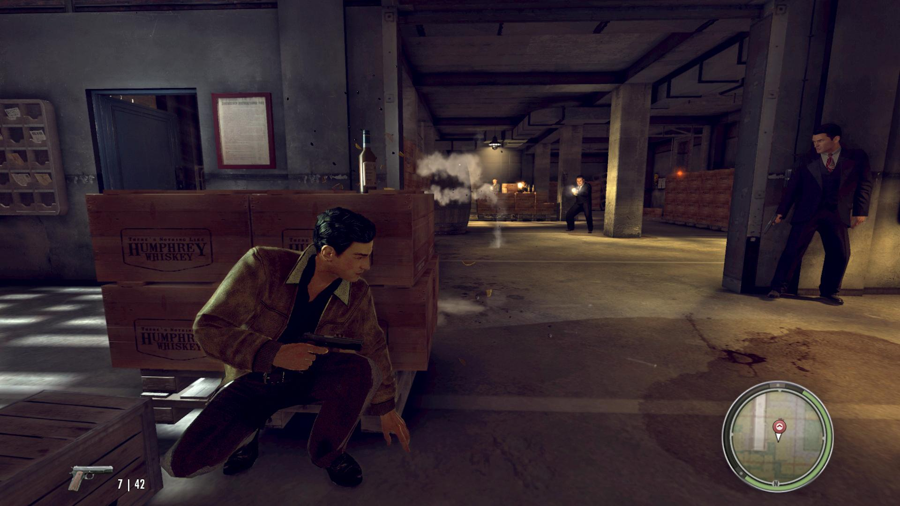
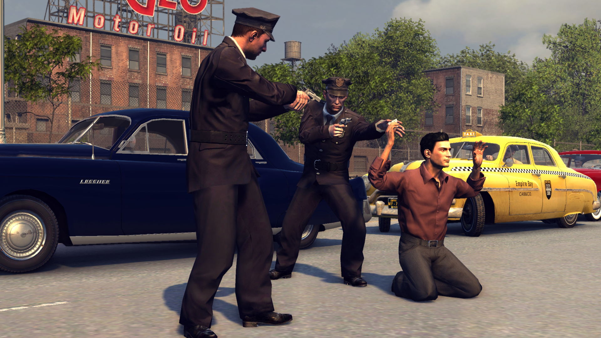
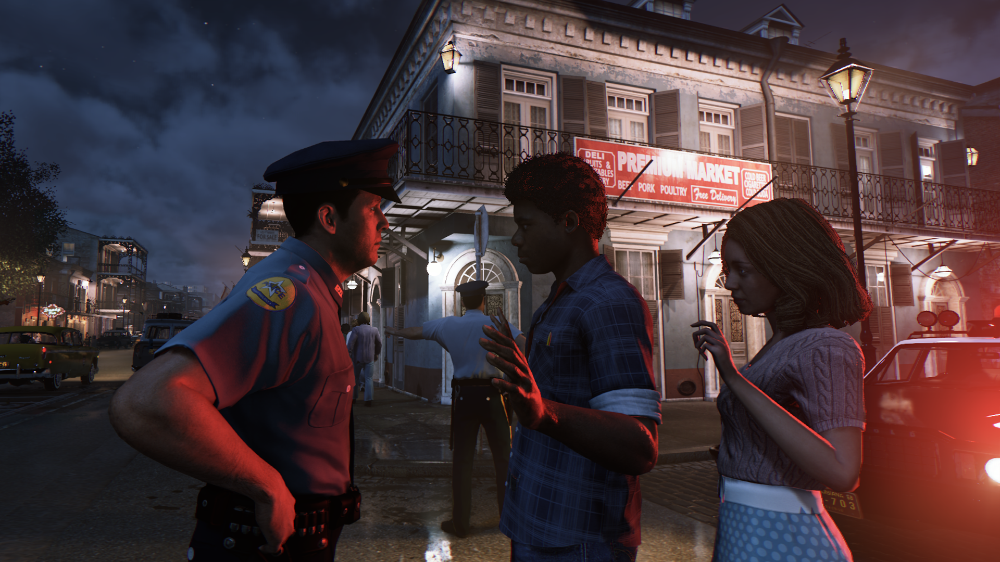

Mafia 2. De los mismos creadores que el juego original, Illusion Softworks, llega Mafia 2, la segunda entrega del popular juego de acción ambientado en los convulsos años 40 y 50 con el mundo de la mafia estadounidense de fondo.
Como tantas otras fantásticas historias, Mafia II da comienzo con una vuelta a casa, la de Vito Scaletta que regresa de permiso tras su participación en la Segunda Guerra Mundial y después de ser herido de levedad. Con una amplitud de foco encomiable comenzamos la aventura, de hecho, batallando en el frente de Italia con el bando de los aliados y en la piel del propio Vito.
- La acción transcurrirá en Empire City que será dos veces más grande que Lost Heaven, con cierto parecido a Nueva York y San Francisco.
- Podrás ir a las gasolineras para rellenar el depósito y limpiar el coche.
- El dinero será importante. Podrás comprar nuevos trajes que te ayudarán si alguien te está buscando.
- Habrá un sistema de daños en los coches muy avanzado.
- Los policías pueden pedir refuerzos si cometes un crimen suficientemente grave
- Múltiples finales.
  
Titulo: Mafia 2
Año: 2010
Genero: Accíon
Tamaño: Pesa un chingo :v
Editor: 2K Games
Descarga aquí
Contraseña: kev.perron